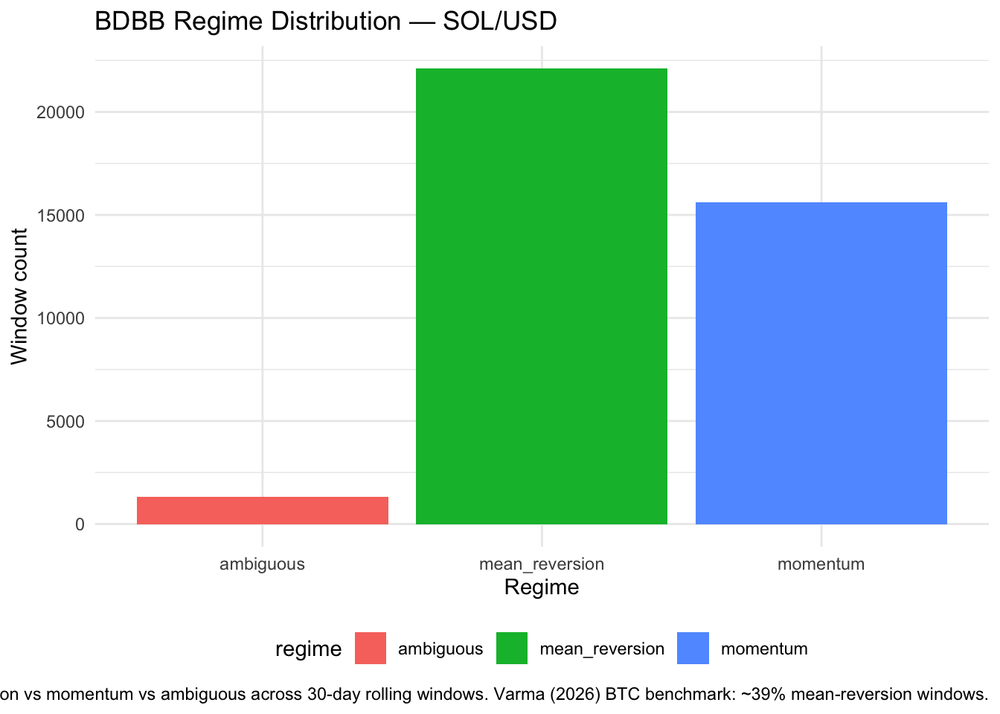

dv <- tar_read(bdbb_sol_dv)
knitr::kable(dv, caption = "SOL/USD data coverage")| ticker | n_rows | date_min | date_max | n_na_close |
|---|---|---|---|---|
| SOL | 39743 | 2021-06-17 15:00:00 | 2025-12-31 23:00:00 | 0 |
M/G/infinity queueing model (Varma 2026) applied to SOL/USD Kraken hourly data. Replicates resilience half-life estimation and tail-risk predictivity test.
This vignette replicates Varma (2026)’s M/G/∞ queueing model on SOL/USD using Kraken hourly OHLCVT bars. The model characterises the market’s resilience — its tendency to absorb order-flow shocks and revert to equilibrium price — as a queueing process. Three outputs are tracked:
log(2) / θ in hours — the time for half the price impact of a shock to dissipate.dv <- tar_read(bdbb_sol_dv)
knitr::kable(dv, caption = "SOL/USD data coverage")| ticker | n_rows | date_min | date_max | n_na_close |
|---|---|---|---|---|
| SOL | 39743 | 2021-06-17 15:00:00 | 2025-12-31 23:00:00 | 0 |
fit <- tar_read(bdbb_sol_fit)
metrics <- tar_read(bdbb_sol_metrics)
knitr::kable(metrics, caption = tar_read(bdbb_sol_caption))| ticker | n_windows | pct_mean_reversion | median_half_life_hrs | r_spread_pp | varma_r_spread_pp |
|---|---|---|---|---|---|
| SOL | 39024 | 56.6 | 8.6 | 7.63 | 8.6 |
fit |>
dplyr::filter(!is.na(regime)) |>
ggplot2::ggplot(ggplot2::aes(x = regime, fill = regime)) +
ggplot2::geom_bar() +
ggplot2::labs(
title = "BDBB Regime Distribution — SOL/USD",
x = "Regime",
y = "Window count",
caption = paste0(
"Mean-reversion vs momentum vs ambiguous across 30-day rolling windows. ",
"Varma (2026) BTC benchmark: ~39% mean-reversion windows."
)
) +
ggplot2::theme_minimal() +
ggplot2::theme(legend.position = "bottom")
tp <- tar_read(bdbb_sol_tail_predict)
pull_spread <- function(pred) {
round(dplyr::filter(tp, predictor == pred)$spread_pp, 2)
}
knitr::kable(
tp,
digits = 2,
caption = paste0(
"Tail-risk predictivity by predictor. ",
"Spread = P(top-decile hourly move | high tercile) - P(... | low tercile). ",
"SOL/USD spreads computed here: R = ", pull_spread("R"), " pp, ",
"Amihud = ", pull_spread("amihud_mean"), " pp, ",
"Kyle = ", pull_spread("kyle_mean"), " pp. ",
"Varma (2026) BTC benchmarks, shown for reference only: R = 8.6 pp, ",
"Amihud = 4.7 pp, Kyle = 1.1 pp. Kyle's lambda is estimated as the OLS ",
"price-impact slope of log-returns on signed order flow within each ",
"rolling window (cov/var; see ",
"[`bdbb_fit()`](https://github.com/JohnGavin/historical/blob/main/packages/historicaldata/R/bdbb.R#L46)",
"), not a per-bar ratio. Prior to [#624](https://github.com/JohnGavin/historical/issues/624), ",
"the `kyle_mean` column was numerically identical to `amihud_mean`, so any ",
"earlier apparent agreement with the Varma Kyle benchmark was spurious and ",
"the corrected figures above should not be assumed to reproduce it."
)
)| predictor | p_extreme_high_tercile | p_extreme_low_tercile | spread_pp | n_high | n_low |
|---|---|---|---|---|---|
| R | 0.15 | 0.07 | 7.63 | 13008 | 13008 |
| amihud_mean | 0.13 | 0.09 | 3.99 | 13008 | 13008 |
| kyle_mean | 0.13 | 0.09 | 4.37 | 13008 | 13008 |
[1] “historicaldata dev | Git cd8803e | R 4.5.3 | Built 2026-08-27 10:45:25”